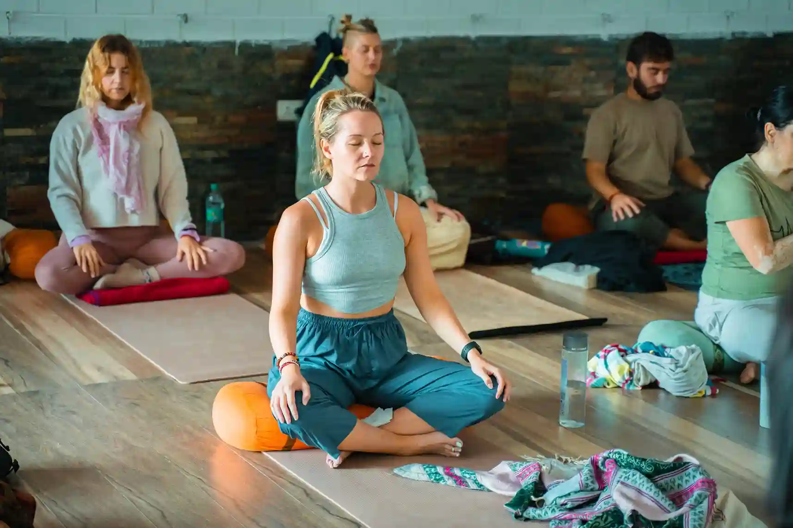
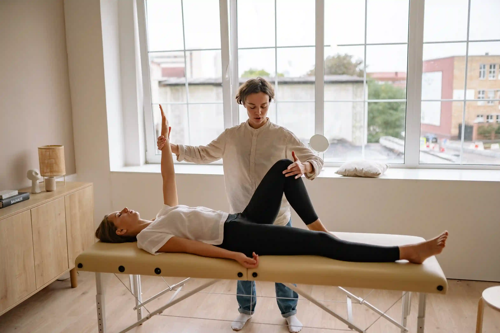
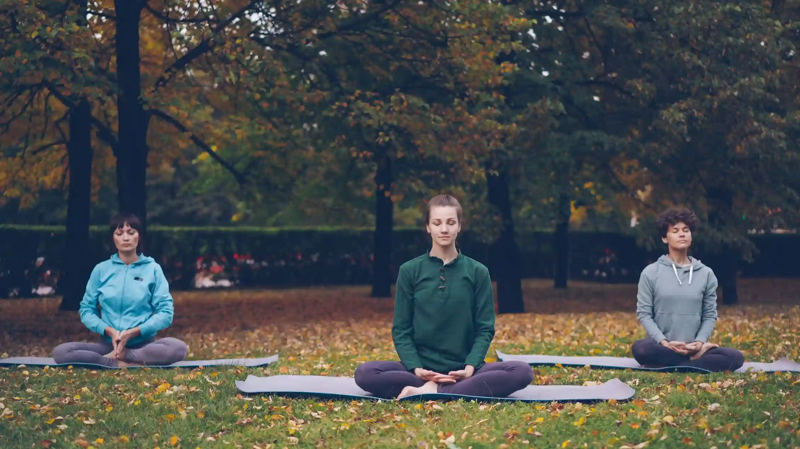
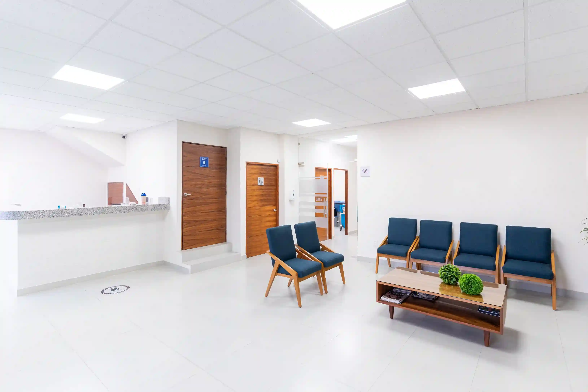
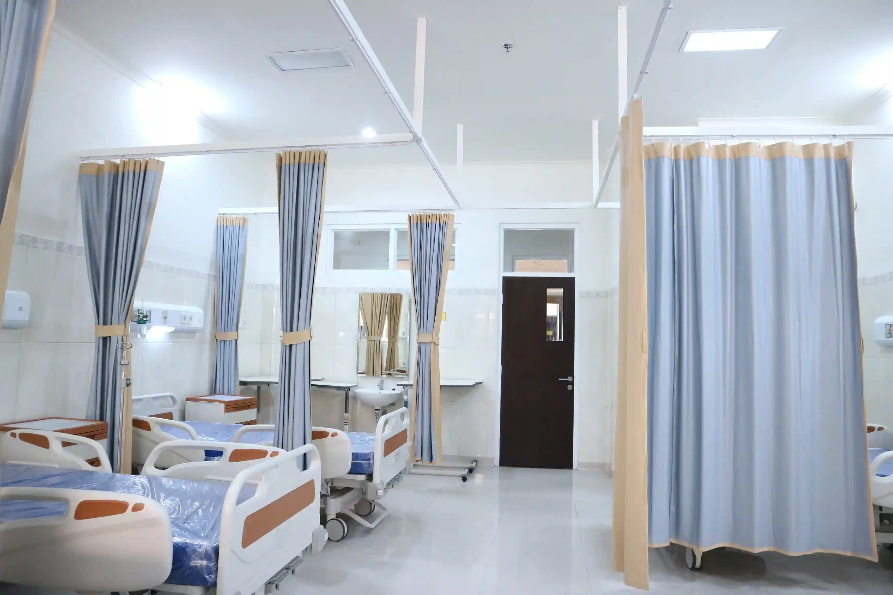

Medical, physical and emotional rehabilitation in a quiet 12-acre setting — with a dedicated care team beside you every step of the way.

Our philosophy
Healing is slow, personal and never a straight line, so our work is to make the next step feel possible.
Our programs
Strength, mobility and pain management after injury or surgery.

Medically supervised detox followed by structured, long-term support.

Therapy, mindfulness and meditation for anxiety, trauma and burnout.

Group fitness and functional training to rebuild confidence in your body.

Your journey
A clear path, so you always know what comes next.
A full medical and personal review in the first 48 hours. We listen before we plan.
Weeks one to three focus on safety, rest and a daily rhythm you can hold.
Therapy, training and skills work with weekly goals you set with your team.
A written aftercare plan, family sessions and check-ins for a full year.
Our facility
Natural light, quiet gardens, a hydrotherapy pool and private rooms. Every space is chosen to lower stress so the body can heal.


Our team

Patient stories
A few of the people who walked the road home with us, and what it meant to them.
I came in unable to walk unaided. Eight weeks later I climbed the garden steps on my own.
Common questions
Can't find your answer? Ask an advisor directly. We are happy to talk, at any hour.
Most programs run 30 to 90 days. Your team reviews the plan every week and adjusts it with you.
We work with most major insurers and verify your cover before admission, free of charge.
Yes. Visiting hours run on weekends, and family therapy sessions are part of every program.
Comfortable clothing, prescribed medication and ID. We provide the rest.
Get in touch
Leave your number and an advisor will call within one working day. Every enquiry stays confidential.